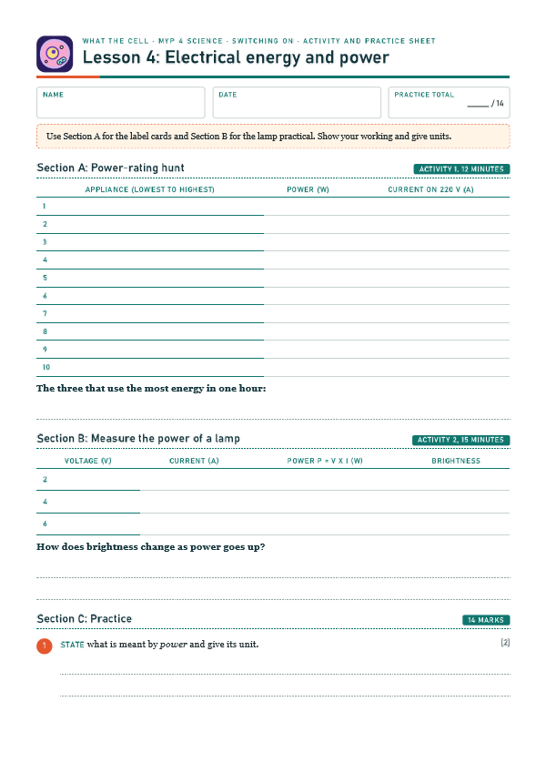

By the end of the lesson you can
- Recall what current and voltage are and their units
- Calculate power with P = V × I
- Read the power rating on an appliance
- Calculate energy with E = P × t
Keys: arrows or a presentation clicker move the slides, F for full screen. Slides with a red dot have a video or simulation.
Videos (all 5 minutes or less)
- 3:19
Energy use in electrical appliances
FuseSchool. While you watch: What does the power of an appliance tell you? Slide 15.
Simulations
- Lab
- PhET
Circuit Construction Kit: DC
PhET, University of Colorado Boulder. Try the tasks on the simulation slide.
Print and practise

Activity and practice sheet
Used in the lesson’s activities, with practice questions. Your teacher has the answers.
Download (PDF)Lesson 4 slides
All 22 slides in one file, to read again or print. The video buttons on the slides open YouTube.
Download the slides (PDF)Revising? The Revision tab on the unit page has the unit notes and review.
Class activity pack
Everything to print for the lesson’s activities: picture cards, sorting mats, station cards with their kit lists, and the teacher’s set-up notes. Print it before class.
Download the activity pack (PDF)Notes: Electrical energy and power
current (I)
The flow of charge round a circuit, in amps (A). For example: 0.5 A through a lamp.
voltage (V)
The push that drives the current; energy per charge, in volts (V). For example: a 1.5 V battery.
power (P)
How fast energy is transferred, in watts (W). For example: a 2000 W kettle.
watt (W)
1 joule every second. 1 kW = 1000 W. For example: a 60 W bulb.
power rating
The power of an appliance, printed on its label. For example: 2000 W on a hair dryer.
energy (E)
Power × time; in joules (J). For example: a kettle on for 60 s.
current (I)
The rate at which charge flows. Measured in amps (A) with an ammeter in series.. For example: about 9 A in a kettle.
voltage (V)
The energy each charge carries; the push of the supply. Measured in volts (V) with a voltmeter in parallel.. For example: mains in Vietnam: 220 V.
Key words
| current (I) | flow of charge, in amps (A) |
|---|---|
| voltage (V) | energy per charge; the push, in volts (V) |
| power (P) | energy per second, in watts (W); P = V × I |
| watt (W) | 1 joule per second; 1 kW = 1000 W |
| power rating | the power printed on an appliance |
| energy (E) | E = P × t, in joules (J) |